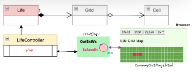

Introduction
Realizzazione del in Java del
GAME OF LIFE DI CONWAY,
cui analisi del dominio applicativo è stata svolta nello
Sprint 1
Nel presente
Sprint 3 la GUI deve essere realizzata attraverso una pagina HTML fornita da un Web-server.
Requirements
- dotare il gioco Life. di una pagina HTML come dispositivo di I/O
- la pagina deve costituire un componente interno alla applicazione secondo la architettura riportata in IoJavalin
interno alla applicazione
- il gestore del gioco sarà l'utente che ha aperto per primo (owner) una pagina HTML collegata al gioco. . In altre
parole, solo la pagina dell'owner avrà pulsanti di comando START/STOP/CLEAN/EXIT attivi
- la pagina HTML deve essere aggiornata in modo automatico man mano il gioco procede
- un utente non owner che si collega mentre il gioco è in corso, dovrebbe vedere lo stato attuale della griglia in
modo corretto
- il deployment del gioco deve avvenire mediante Docker.
Requirement analysis
- Considerando quanto ottenuto dall'analisi conseguita Sprint 1, si vuole fare in modo che LifeController
sia pilotato tramite una pagina HTML. Tale pagina HTML deve essere fruita attraverso un browser
e pertanto veicolata attraverso un server.
- In relazione al requisito R2: è necessario estendere il sistema sw in modo tale che la GUI possa essere
erogata da un server Javalin che farà parte integrante dell'applicazione, in quanto sistema concentrato.

Il componente che utilizza il server viene indicato come IOJavalin
- IoJavalin è parte di un oggetto OutInWs che implementa i metodi dell'interfaccia IOutDev.
Pertanto, la classe OutInWs deve implementare IOutDev, definita in fase di analisi nello sprint 1
permettendo ad IOJavalin di abilitare la comunicazione con LifeController e di attivare i metodi di LifeController quando riceve (via WS) comandi dalla pagina.
- In base al requisito R2 ed R3, l'utente deve poter interagire con il browser il quale comunicherà con LifeController
per mezzo della mediazione del server interno all'applicazione.
Il browser è comunque esterno all'applicazione, pertanto può essere deciso in questa fase se, al lancio dell'applicazione:
1. Venga attivato in modo automatico un browser locale così che la pagina HTML possa comparire in modo automatico
2. Non avvia la pagina in automatico ma accedendo ad un browser locale con localhost:8080, si ottiene la pagina.
Problem analysis
IoJavalin è parte di un oggetto OutInWs che implementa i metodi dell'interfaccia
IOutDev e
inoltre definisce un metodo per iniettare il riferimento a LifeController, permettendo la comunicazione con esso:
public void setController(GameController controller) {
this.controller = controller;
}
- Analisi della comunicazione pagina-server
La pagina comunica con il guiserver usando stringhe strutturate, in modo che guiserver possa ricavare dalla stringa,
oggetti coerenti con l'interfaccia IApplMessage:
msg( MSGID, dispatch, SENDER, guiserver, CONTENT, SEQNUM )
Ciò viene fatto in particolare per rendere il livello applicativo tecchnology-independent.
I messaggi inviati di tipo dispatch, ovvero fire and forget, in quanto non richiedono una risposta, ma
vogliono solo creare un'azione lato server.
Inizialmente la pagina ha come nome "unknown", che verrà usato come nome del sender alla prima connessione
msg( MSGID, dispatch, unknown, guiserver, CONTENT, SEQNUM )
Il Server risponde alla richiesta di connessione di una nuova pagina, creando ed assegnando alla pagina
un nuovo nome (pagename). Inoltre per far fede al Requisito R3, è necessario memorizzare la prima connessione
che prende il ruolo di owner.
msg( MSGID, dispatch, pagename, guiserver, CONTENT, SEQNUM )
Dopo la connessione possono essere inviati dei comandi dalla pagina al server, formalizzati come dispatch, sempre in ossequio al requisito R3,
solo il coller1 deve potre inviare i comandi. Il content varia a seconda del tipo di comando:
msg( do, dispatch, caller1, guiserver, CONTENT, SEQNUM )
CONTENT potrà essere una semplice String quale start/stop/clear/canvasready
Quando una pagina invia dispatch al guiserver dovrà inviare a sua volta un messaggio di comando a lifectrl.
Per semplificare il codice, i messaggi inviati dalla pagina al server possono avere come destinatorio
direttamente il nome lifeCtrl.
msg( do, dispatch, caller1, lifeCtrl, start, SEQNUM )
- Analisi della comunicazione Server-Pagina
Nella comunicazione tra il Server e la Pagina, i messaggi non sono Strutturati, come prima, per evitare di obbligare la pagina a
comunicare con messaggi strutturati in questo modo. Pertano il server invia alla pagina comandi espressi da semplici stringhe
ID:name //par dare il valore name al nome della pagina
cell(X,Y) //per commutare lo stato di una cella (griglia granulare)
[[false,false, ... ]] //per specificare lo stato di una griglia globale
Messaggi siffatti possno essere interpretati e gestiti direttamente in JavaScript dalla pagina
Test plans
Project
Testing
Deployment
Deployed mediante Docker.
Maintenance
By studentName email: gregorio.bussolari@studio.unibo.it,

GIT repo: https://github.com/GregorioBussolari/iss2026Unibo.git